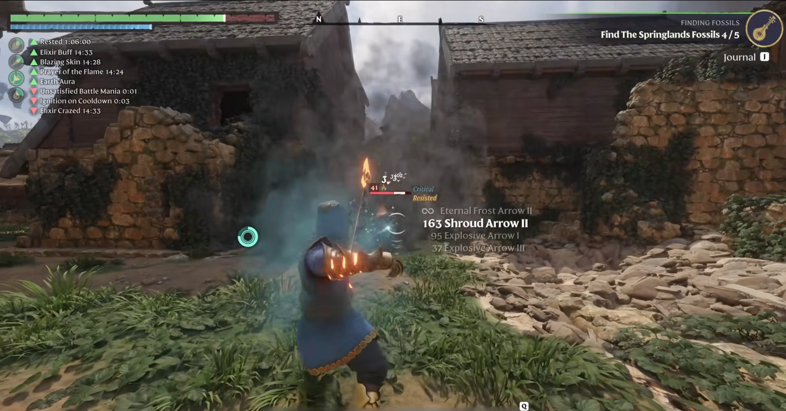

Enshrouded Archer Assassin Build — High Mobility DPS
Float like a butterfly, hit like a truck. Highest single-target DPS in the game — land headshots, kite bosses, and never get touched.
Updated | The highest skill-ceiling build — devastating in the right hands

⚡ Quick Answer: The Ranger/Assassin build deals the highest burst DPS in Enshrouded. Now more dagger-focused after Update 8 bow nerfs. Key skills: Dagger Master, Multishot, Fatal Precision. Key weapons: Daggers + Ignited Bow with Explosive Arrows. Best for players who enjoy high-risk, high-reward gameplay.
🎯 Build Overview
✅ Strengths
- Highest single-target DPS — headshots multiply damage
- Safest playstyle — you kill bosses without entering their attack range
- Best mobility — Assassin tree makes you the fastest build in the game
- Hunter's Crossbow burst deletes priority targets
❌ Weaknesses
- Hardest build to play — requires aim, positioning, and timing
- Ammo management — crafting arrows is a constant chore
- Weak AoE — groups of enemies are your kryptonite
- Very squishy — one mistake and you're dead
👤 Best For
- Skilled players who enjoy precision and kiting
- Solo boss speedruns — this build has the fastest kill times
- Players transitioning from other action games (Monster Hunter, Souls)
- Not for: casual players who want to relax and tank
The Archer Assassin build is the highest skill-ceiling build in Enshrouded. It demands precision — headshots with the Ignited Bow deal massively multiplied damage, and the Hunter's Crossbow can one-shot normal enemies with a well-placed bolt. But miss your shots, mismanage your positioning, or run out of arrows mid-fight, and your squishy archer goes down fast.
This build comes online at level 12 when you unlock the Assassin tree's core damage passives. The early game (levels 1-10) is a survival challenge — you'll rely on the Survivor tree's mobility and a bow with limited damage. Once Airborne (bonus damage while gliding/falling) and Headhunter (headshot multiplier) unlock, your damage triples. The Scavenger Warlord fight at level 12 is where this build truly proves its worth — a 30-second kill with well-placed headshots is achievable.
⭐ Skill Point Allocation
Every point invested in mobility, precision, and single-target damage. Land your shots or die.
| # | Skill | Tree | Why This Order |
|---|---|---|---|
| 1 | Double Jump | Survivor | Universal mobility. Archers need high ground for clear sightlines. Double Jump gets you there instantly. |
| 2 | Updraft | Assassin | Glider height boost. Combined with Double Jump = you can reach any elevated perch. Early because positioning is everything for archers. |
| 3 | Sneak Attack | Assassin | Bonus damage on unaware enemies. Open every fight with a stealth headshot from range. Your first damage multiplier. |
| 4 | Airborne | Assassin | Bonus damage while gliding or falling. Double Jump → Glide → shoot mid-air. Your signature combat maneuver — damage boost while staying mobile. |
| 5 | Dessert Stomach | Survivor | Fourth food buff. Stack DEX food + stamina food + crit food + HP food. Archers benefit from food more than any other build. |
| 6 | Headhunter | Assassin | Headshot damage multiplier. This is where your damage triples. Every headshot now deletes normal enemies and chunks bosses. Practice your aim — this skill rewards it. |
| 7 | Eagle Eye | Assassin | Longer zoom and reduced arrow drop at range. Extends your effective range beyond what bosses can close. Lets you snipe from safety. |
| 8 | Endurance | Survivor | Stamina for more Double Jumps and Glider time. More air time = more Airborne damage procs. |
| 9 | Blink | Healer | Teleport dodge for emergencies. Delayed because archers shouldn't be in melee range. But when a boss closes the gap, Blink saves your life. |
| 10 | Quickdraw | Assassin | Faster bow draw speed. Direct DPS increase for your primary weapon. Every shot comes out faster = more shots per damage window. |
| 11 | Crossbow Expert | Assassin | Bonus crossbow reload speed and damage. Enables the Hunter's Crossbow as a devastating secondary. Bow for sustained DPS, Crossbow for burst. |
| 12 | Battle Heal | Healer | Passive healing. Archers take less damage than melee builds, but chip damage from ranged enemies adds up. This offsets it. |
| 13 | Vitality | Survivor | HP increase. One-shot protection. At this point, bosses start having gap-closers that can kill a squishy archer from full HP. |
| 14 | Shadow Step | Assassin | Short invisibility after a dodge. Drops aggro and lets you reposition. Essential for resetting boss attention in solo fights. |
| 15 | Water Aura | Healer | Second passive healing source. Combined with Battle Heal, you now recover from mistakes without potions. |
| 16 | Ambush | Assassin | Bonus damage after exiting stealth. Synergizes with Shadow Step — dodge → stealth → Ambush-boosted shot. Your burst rotation is now complete. |
| 17 | Merciless Strike | Center | Bonus damage to low-HP enemies. Helps finish bosses faster — the last 30% of a boss's HP bar is the most dangerous. |
| 18 | Steady Hands | Center | Reduced weapon stamina cost. Bow shots have a small stamina drain — this keeps you firing longer before needing to rest. |
| 19 | Evasion | Survivor | Increased dodge invincibility. Combined with Blink + Shadow Step, you are nearly impossible to pin down. |
| 20 | Headhunter Mastery | Assassin | Further headshot multiplier. The capstone. Your headshots now deal damage numbers that make melee builds jealous. Every boss fight becomes a head-clicking competition. |
🔒 Must-Have Skills
- Double Jump + Updraft — positioning foundation
- Airborne — your signature damage mechanic
- Headhunter — headshot multiplier, build-defining
- Quickdraw — DPS enabler
- Shadow Step + Ambush — burst rotation core
- Headhunter Mastery — capstone multiplier
🔓 Flex Slots
- Crossbow Expert → skip if you prefer bow-only
- Water Aura → delay further if you're confident in your dodging
- Merciless Strike + Steady Hands → swap for more Survivor passives
⚔ Weapons & Equipment
| Priority | Weapon | Type | Why This Build | Crafting |
|---|---|---|---|---|
| Best | Ignited Bow | Bow | Fire arrows + range = safest DPS in the game. Your primary weapon. Headhunter + Headhunter Mastery multiply fire arrow headshots to absurd levels. | Wood, Fire Essence |
| Best | Hunter's Crossbow | Crossbow | Highest single-shot damage. Weapon-swap to Crossbow for the Ambush opener — stealth → Crossbow headshot → swap to Bow for sustained DPS. | Iron Bars, Wood, Leather |
| Good | Scorching Wand | Magic (Fire) | Backup ranged option when out of arrows. No INT scaling with this build, but base fire damage is serviceable in emergencies. | Fire Essence, Shroud Core |
| Skip | Wailing Blade | 2H Sword | You're an archer. If you're in melee range swinging a sword, something has gone very wrong. | — |
🛡️ Armor Preference
Prioritize stamina regen and movement speed. Hunter armor is the early-game goal — it provides bonuses to ranged damage and stamina. Light armor only — heavy armor's stamina penalty reduces your Double Jump and Glider uptime, which directly lowers your Airborne damage output.
💀 Combat & Boss Strategy
| Boss | Difficulty | Strategy With This Build |
|---|---|---|
| Fell Warden First Boss | 🟢 | His slow charge is perfect headshot practice. Double Jump over the ground slam, Airborne-boosted headshot on the way down. He'll be dead before you need to dodge twice. Craft 50+ arrows before this fight. |
| Wyvern Flying | 🟡 | Aerial archer vs flying boss — the most cinematic fight in the game. Updraft + Double Jump to match its altitude, Airborne headshots mid-glide. Eagle Eye makes the long range shots land. Bring 80+ arrows — this fight is long. |
| Matron Poison/Shroud | 🟢 | Slow boss = free headshots. You can kite her indefinitely with Bow. Literally never enter her poison cone range. This is the easiest boss for archers — it's target practice. |
| Scavenger Warlord Humanoid | 🟡 | Fast, aggressive, but his head hitbox is generous. Shadow Step → Ambush → Crossbow headshot opener. Then kite with Bow. His dual-wield combos have long recovery windows — that's when you plant and shoot. |
| Fell Dragon Endgame | 🟠 | Massive hitbox but devastating gap-closers. Eagle Eye lets you stay at extreme range. Fire breath is the main threat — Double Jump + Glide over it, Airborne headshot during the glide. Bring 100+ arrows and a backup weapon. |
| Hollow King Secret | 🔴 | Small head hitbox and high mobility make this the archer's hardest fight. You'll miss more shots than you land. Patience is key — chip damage, stay alive, don't force headshots on his fast combos. Body shots still deal damage. |
🗺️ Leveling Roadmap
🟢 Early Game
~0-10 skill points
Mobility + first damage nodes
- #1-3 Double Jump + Updraft + Sneak Attack
- #4-5 Airborne + Dessert Stomach
- #6-7 Headhunter + Eagle Eye (damage spike)
- #8-10 Endurance + Blink + Quickdraw
🟡 Mid Game
~10-18 skill points
Burst rotation + survivability
- #11-12 Crossbow Expert + Battle Heal
- #13-14 Vitality + Shadow Step
- #15-16 Water Aura + Ambush (burst rotation complete)
- #17-18 Merciless Strike + Steady Hands
🔴 Late Game
18+ skill points
Finishing touches + capstone
- #19 Evasion — final dodge upgrade
- #20 Headhunter Mastery — the capstone
- Beyond: More Survivor passives for sustain
⚠️ Common Mistakes
Mistake #1: Forcing headshots on fast-moving bosses
Headhunter's multiplier is tempting, but missing 3 headshots waiting for the perfect angle does less damage than landing 5 body shots. Against mobile bosses (Scavenger Warlord, Hollow King), take the body shots you can land. Headshots are for recovery windows.
Fix: Early in a boss fight, prioritize landing ANY shots. Learn the boss's recovery windows, then start aiming for the head during those windows. Speed comes with practice.
Mistake #2: Running out of arrows mid-fight
The #1 cause of archer deaths. You're kiting a boss perfectly, then you hear the empty-bow *click*. Now you're weaponless against an angry Wyvern. Always over-craft arrows before every major encounter.
Fix: Craft 50% more arrows than you think you need. Fell Warden: 50 minimum. Wyvern: 80. Fell Dragon: 100+. Keep wood and fire essence stockpiled in your base.
Mistake #3: Neglecting stamina skills
Airborne requires being in the air, which requires stamina for Double Jump and Glider. Without Endurance and Steady Hands, you spend too much time on the ground where your damage is lower and you're easier to hit.
Fix: Endurance (#8) and Steady Hands (#18) are not optional. Your entire playstyle depends on stamina uptime.
Mistake #4: Playing Archer before level 8
Archer is the weakest early-game build. Before Headhunter at point #6 and Quickdraw at point #10, your damage is low and your arrows are limited. New players often try to go pure archer from level 1 and get frustrated.
Fix: Play the Starter Build until level 10-12, then respec into Archer. You'll have more skill points, more resources, and the build will immediately feel powerful instead of painful.
🔄 Advanced Variants
🧪 Pure Bow Variant
Swap: Crossbow Expert + Ambush → 2 more Eagle Eye/Headhunter nodes
Why: Goes all-in on Bow. Higher sustained DPS, lower burst. Simpler playstyle — no weapon swapping.
Best for: Players who prefer consistency over burst.
🧪 Trapper Variant
Swap: Headhunter Mastery → 2 points in Trickster tree
Why: Adds traps and CC for group encounters. Sacrifices some single-target for AoE control.
Best for: Solo players struggling with multi-enemy encounters.
Related Builds
Starter Build
Play this until level 10, then respec into Archer.
Mage DPS Build
The other ranged option — AoE instead of single-target.
Full Skill Tier List
Compare every skill before you commit your next respec.
Highest Burst DPS
Ranger/Assassin delivers the highest burst damage in Enshrouded. Dagger Master + Fatal Precision + Multishot can delete bosses in seconds with the right setup.
Dagger + Bow Hybrid
Update 8 shifted the meta toward daggers. Pair fast melee daggers with a bow for ranged burst — best of both worlds, maximum flexibility.
Requires Two Skill Trees
You need both Assassin and Survivor trees to make this build work. High investment, high reward — not recommended before level 12.
📖 Related Guides
⚔️ Best Weapons Tier List 🛡️ Armor Sets & Stats 💀 Boss Solo Strategies ⭐ Best Skills Tier List
⚙️ Build Loadout Details
Gear, gems, food, and combat rotation — everything you need to run this build at full power.
🛡️ Equipment Slots
| Slot | Best Item | Notes |
|---|---|---|
| Head | Quetzal Hunter Hood | DEX bonus, crit chance |
| Chest | Eagle Eye Chest (Lv 25) | Best scaling ranged chest — DEX + crit damage |
| Gloves | Skull Stalker Gloves | Bonus crit damage — essential for burst |
| Pants | Quetzal Hunter Pants | DEX + movement speed |
| Boots | Quetzal Hunter Boots | DEX + stamina cost reduction |
| Weapon 1 | Daggers (any legendary) | Fast hits, high crit rate — primary weapon after Update 8 |
| Weapon 2 | Ignited Bow | Fire arrows, Explosive Arrow III (38 fire damage) — swap for bosses |
💎 Gem Recommendations
💎 Gem of Corruption
Slot: Daggers
Why: Fast weapon = max stacks in 2 seconds. Explosion damage adds ~20% burst.
💎 Gem of Burning
Slot: Bow
Why: Fire DoT on Explosive Arrows. Double-dips with bow's innate fire damage.
💎 Gem of Cutting
Slot: Daggers (alternative)
Why: Physical bleed. Consistent DPS if you prefer sustained damage over burst.
🍖 Food Buff Combination
| Category | Recommended | Effect |
|---|---|---|
| Vegetable | Grilled Vegetables | +Ranged/Dagger damage % |
| Meat | Grilled Meat | +Max HP — you're squishy, need buffer |
| Liquid | Water | +Stamina regen — dodging and dashing constantly |
| Sweet | Honey | Extra stamina regen for extended kiting |
⚔️ Combat Rotation
Stealth opener (bushes) → Dagger combo (5 quick hits) → Slice and Dice on cooldown → Blink (reposition behind enemy) → backstab bonus → Swap to Bow for flying enemies → Fatal Precision on stunned targets. Never stand still.
- 2026-07-18 — Updated for Update 8: Bow nerfs noted, dagger focus increased. Image added.
- 2026-07-10 — Initial archer assassin build. Ranger / Assassin hybrid.
Was this build guide helpful?